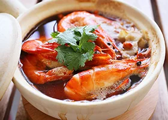

Make room for dinner.
Your favourite dishes. Your kind of evening.
What are you planning?
How would you like to plan?
What sounds good?
Choose a tag to include it, again to exclude it, and once more to clear.
Meal of Fortune
Spin to choose your single meal. Keep it, or try again.
